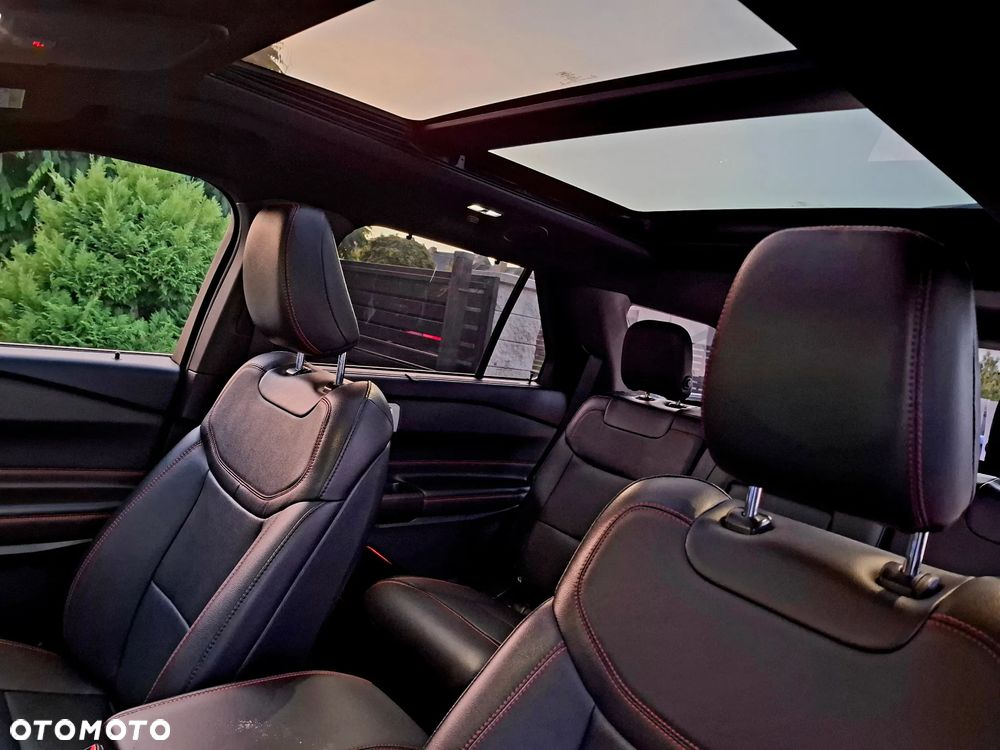
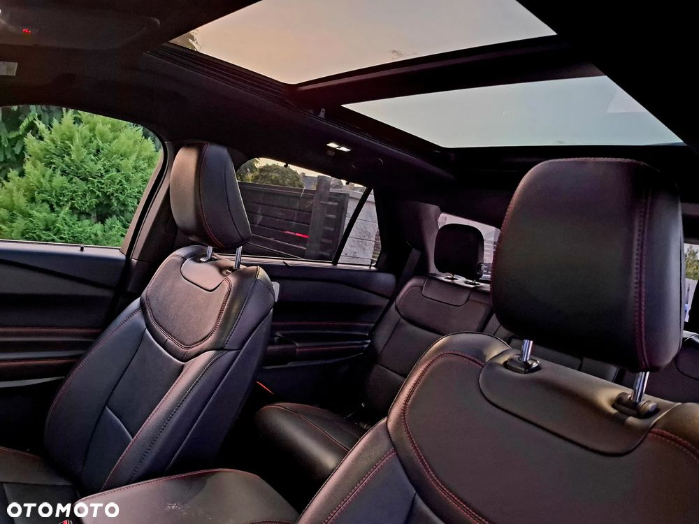
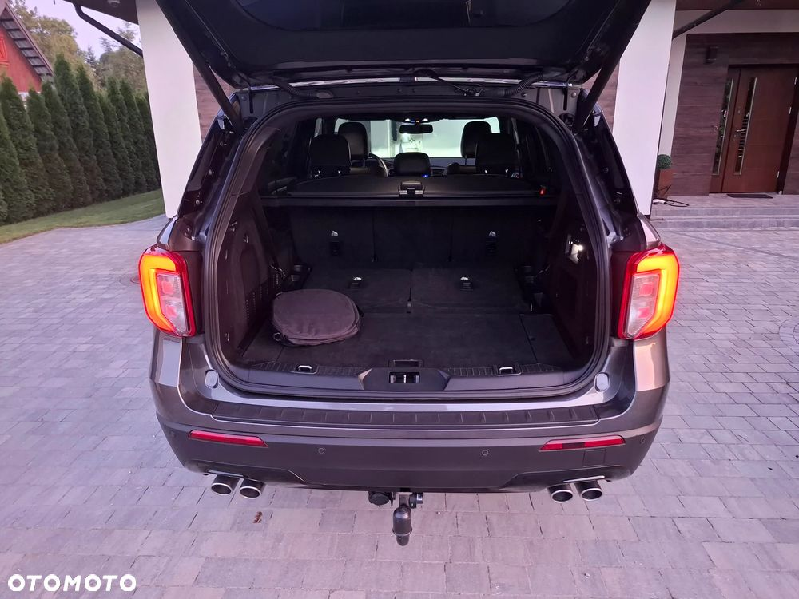
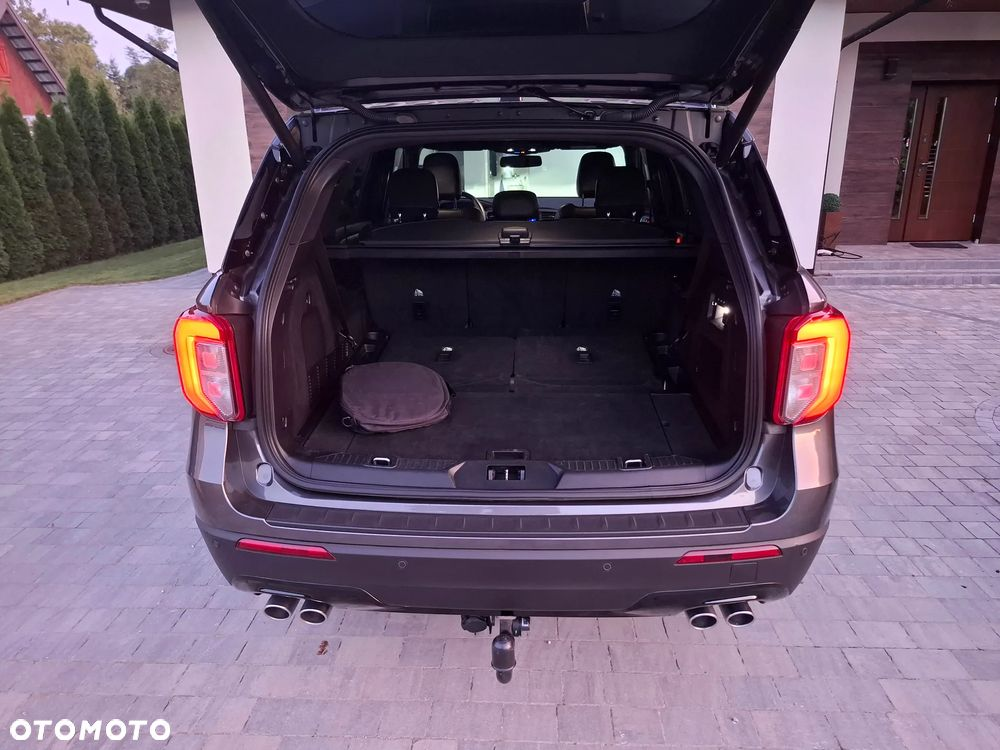
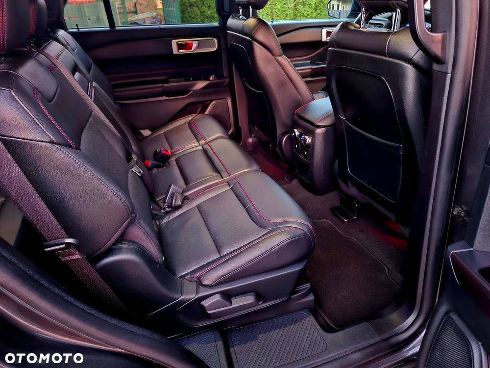
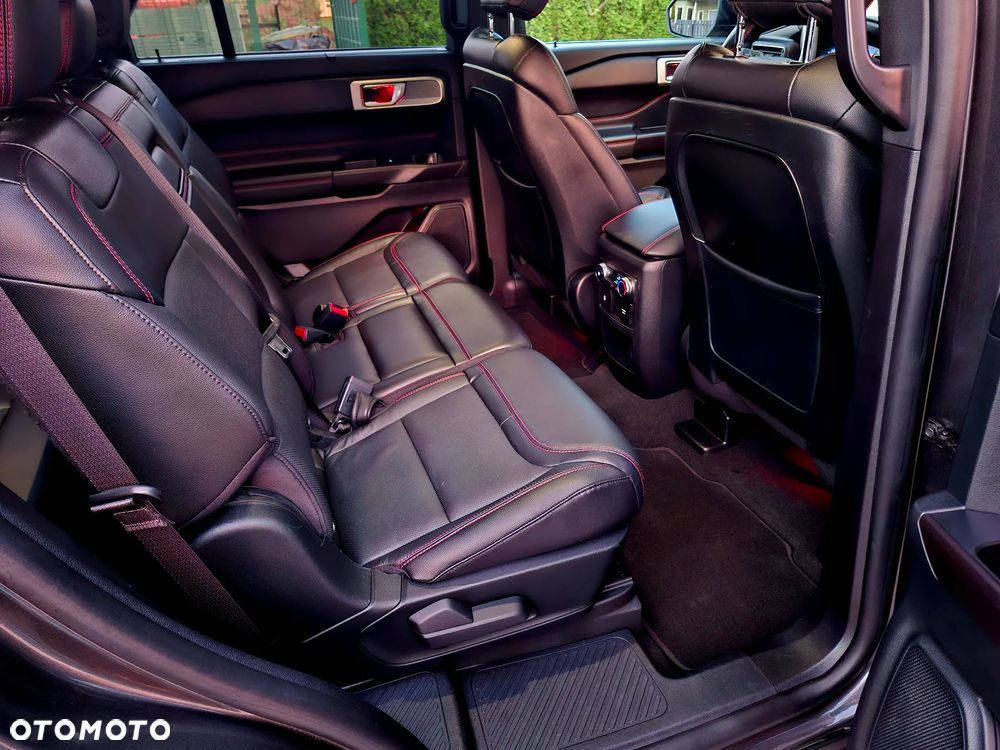
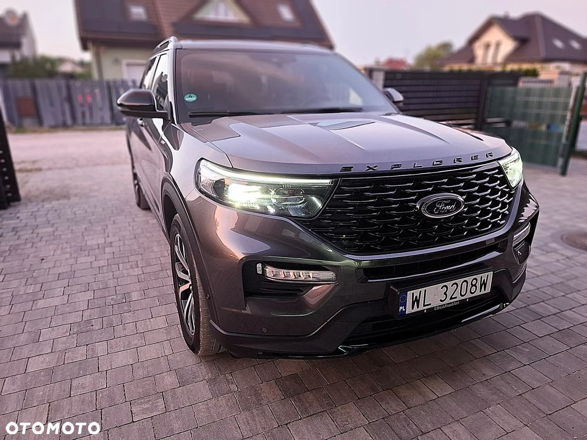
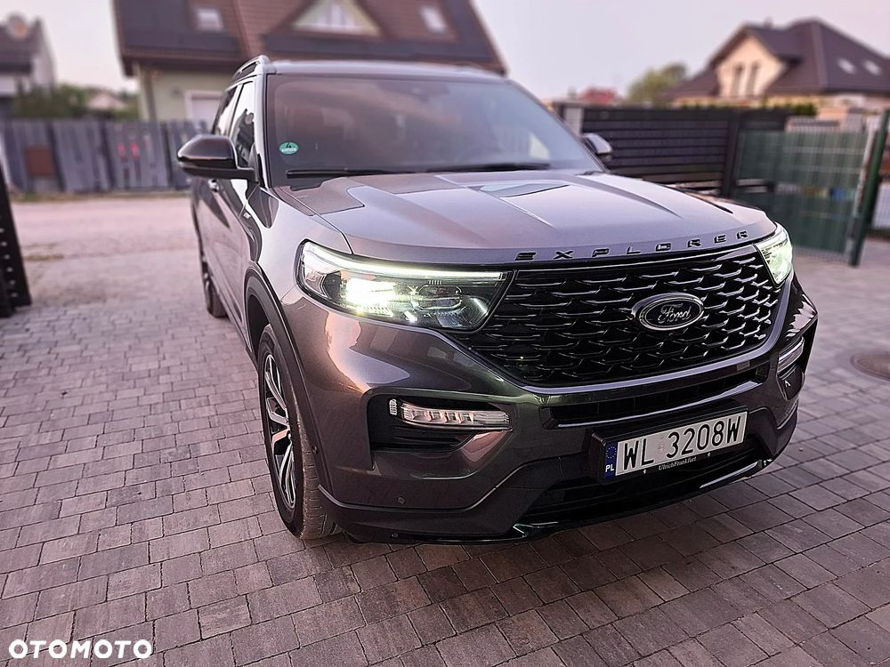
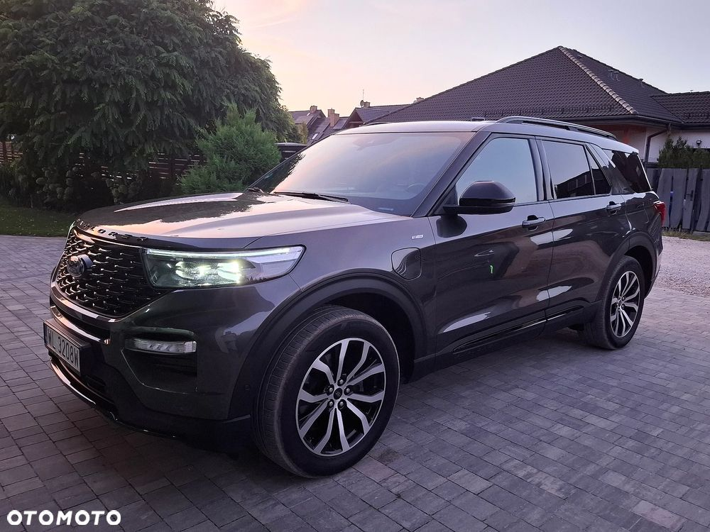
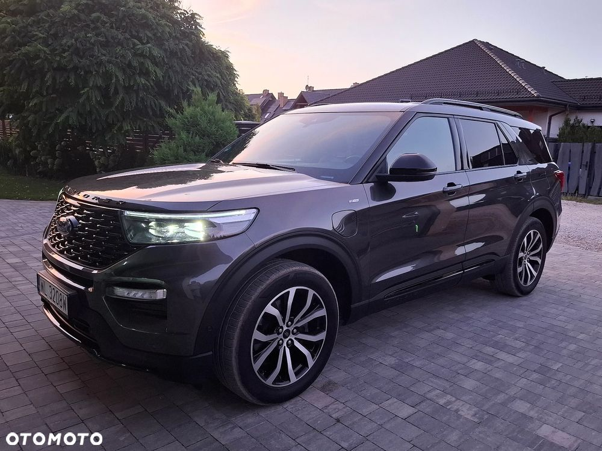

} Auto w stanie idealnym.
} Zadbane i dopieszczone włącznie z ceramiką na lakierze i zabezpieczonym środkiem.
} Auto bardzo szybkie a zarazem oszczędne, jest hybrydą plugin a mimo to może ciągnąć na haku 2500kg.
} Ford Explorer w wersji ST-Line Plug-In z hybrydowym układem napędowym: 3-litrowym silnikiem benzynowym o mocy 363 KM w zestawieniu z silnikiem elektrycznym o łącznej mocy 457 KM, napędem na cztery koła AWD i automatyczną 10-stopniową skrzynią biegów A10, 7-osobowy.
historia i aktualny stan pojazdu:
} samochód obecnie użytkowany jako auto rodzinne
} podana cena jest kwotą brutto z uwzględnieniem faktury VAT 23% / 169 000,00 PLN netto
} komplet serwisów wykonany w Autoryzowanych Stacjach Obsługi Ford
} pochodzi z niemieckiej sieci dealerskiej Ford
} użytkowany przez osobę niepalącą
} bezwypadkowy
Lista wyposażenia:
} wewnętrzny i zewnętrzny pakiet stylistyczny ST-Line
} fabryczny czarny pakiet optyczny dla elementów zewnętrznych
} trzeci rząd foteli składany w podłodze bagażnika, wersja 7-osobowa
} selektor Ford Terrain Management System z kilkoma trybami jazdy do wyboru
} aktywny tempomat ACC z funkcją kontroli i utrzymania odległości
} aktywny asystent utrzymania w pasie ruchu
} asystent zmiany pasa ruchu (martwego pola)
} asystent rozpoznawania znaków drogowych
} aktywny asystent hamowania awaryjnego
} dach panoramiczny (dwuczęściowy / przesuwny / uchylny)
} nagłośnienie Bang Olufsen BeoSonic Sound System z 9 głośnikami, subwooferem i soundbarem
} kamery 360 z kamerą cofania i czujnikami parkowania (przód / tył)
} reflektory Full LED z asystentem świateł drogowych i światłami LED do jazdy dziennej
} aktywnie wentylowane, podgrzewane i elektrycznie regulowane fotele przednie z podparciem dla odcinka lędźwiowego kręgosłupa
} fotel kierowcy z pamięcią ustawień (3 sloty)
} podgrzewane skrajne fotele drugiego rzędu
} podgrzewana kierownica sportowa, skórzana, perforowana, multifunkcyjna
} manetki zmiany biegów przy kierownicy
} tapicerka skórzana, perforowana, w kolorze czarnym-antracytowym z czerwoną nicią
} podsufitka w kolorze czarnym-antracytowym
} zautomatyzowana klapa bagażnika z czujnikiem otwarcia gestem
} podgrzewana szyba czołowa, podgrzewana szyba tylna
} lusterko wsteczne samoczynnie przyciemniające się
} lusterka boczne podgrzewane, sterowane i składane elektrycznie
} system bezkluczykowy Ford KeyFree z dostępem komfortowym
} starter Ford KeyFree
} system nawigacji satelitarnej GPS Ford SYNC3+ z wyświetlaczem dotykowym i DAB+ oraz USB / AUX
} połączenie ze smartfonem w technologii Apple CarPlay / Android Auto + bezprzewodowo przez Bluetooth
} modem FordPass Connect
} fabryczna instalacja alarmowa
} fabrycznie przyciemnione szyby w tylnej części pojazdu
} fabryczna instalacja haka holowniczego (manualny / odpinany)
} klimatyzacja 3-strefowa z wyświetlaczem temperatury i nawiewem w częściach tylnych
} felgi aluminiowe w rozmiarze R20 w kolorze szarym, częściowo polerowane
} czujnik deszczu / czujnik zmierzchu
} komplet kluczyków (2 szt.)
} zdalne sterowanie wieloma opcjami z aplikacji w telefonie, lokalizacja auta GPS.
Zapraszam do obejrzenia i jazdy próbnej.
Sprzedaż na podstawie:
} auto zarejestrowane na firmę, faktura VAT 23%
} przelew / gotówka / finansowanie (leasing / kredyt / najem / inne)
} możliwość sprawdzenia pojazdu przed zakupem w ASO lub stacji diagnostycznej


 
 
 


 
 
